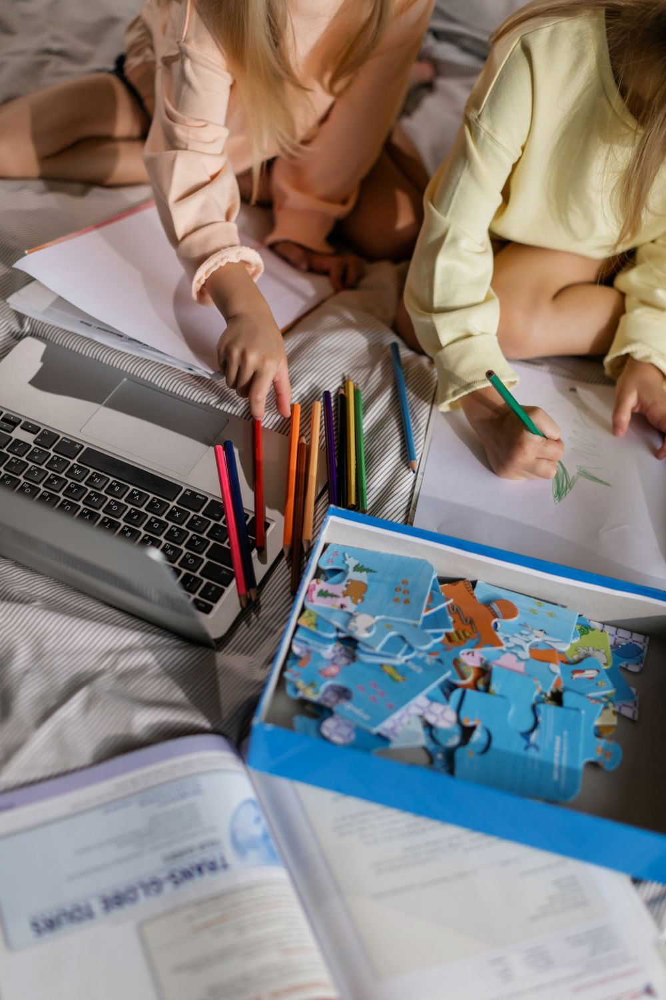
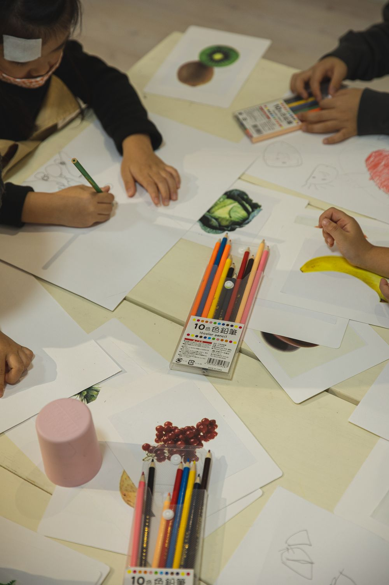

創作
描く・つくる
色鉛筆や折り紙で、手を動かす時間。好きな道具から始められます。
少人数での活動
さいたまの放課後・休日の居場所
障害のあるお子さんが、自分のペースで過ごす放課後。遊び、創作、休息の時間を、お子さんとご家族と一緒に考えます。
活動の内容は、その日の体調や気持ちに合わせて選べるようにしています。

色鉛筆や折り紙で、手を動かす時間。好きな道具から始められます。
少人数での活動
机を囲んで遊ぶ時間。見て過ごしたい気持ちも大切にします。
参加の仕方を選べる疲れたときは静かな場所へ。落ち着いてから次の活動を決めます。
一人で過ごす時間も送迎や過ごし方、苦手な音や環境、慣れるまでのこと。いつもの様子を聞かせていただければ、一緒に見学や利用の進め方を考えます。
お子さんの年齢と、お困りごとやご希望をお聞きします。
活動場所や過ごし方を見て、ご不明点をお話しください。
受け入れ状況や利用条件、必要な連携を個別に確認します。
お子さんとご家族で来られる時間を調整する設定です。
地域や時間帯によって調整が必要な想定で、見学前に確認します。